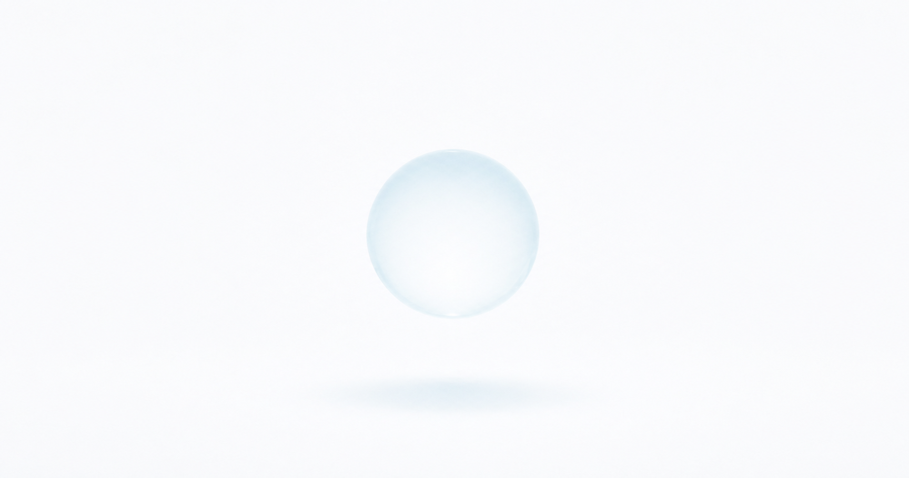
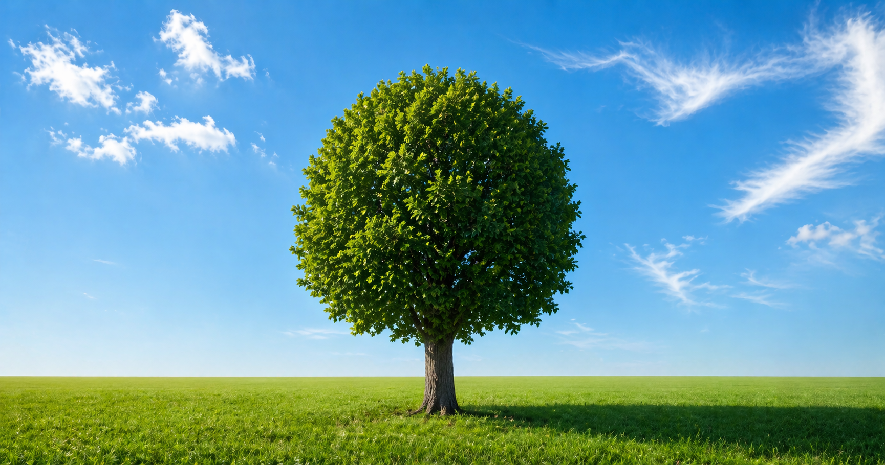
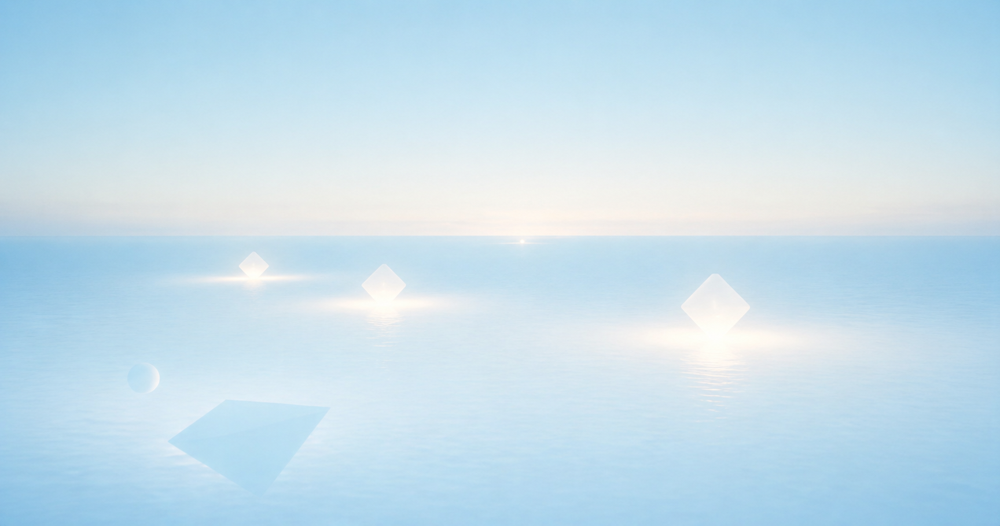

I'm learning coding slowly, not to rush, but to understand.
Every line I write is part of a process — sometimes messy, sometimes clear.
But I keep going, step by step, building something real in my own way.
My name is Dhika Albani. I’m building myself through coding, philosophy, and disciplined growth.
step by step.
Age: 14
Focus: Coding, mindset, growth
Style: Calm, Aware, Consistent
Goal: Build myself before building big things.
Favorites: Sky, Water, Air
April 20, 2026
Exploring the externality.
Learned about reality further more in the external, knowing everyone, every humans is the same but with each different flow just like me itself.
April 19, 2026
Started building this page.
Learning how to control layout, animation. And creating something calm and personal.
April 18, 2026
Realized that consistency comes not from force, but from staying aware in small actions.
Not rushing, but moving step by step without loss of consistency.
View my Growth System(GS) for more:
View my Growth System.
Presence as Reality
Being fully aware of what is happening now, without adding unnecessary thoughts. Reality is not what you imagine — it is what is directly in front of you.

Personal Sanctuary
The Imagination
A place beyond reality that reflects your inner state. Not entered by force, but revealed through presence.

Friend with Reality
Reality is not against you. It is neutral. But your relationship with it defines your experience.
Loading. . .